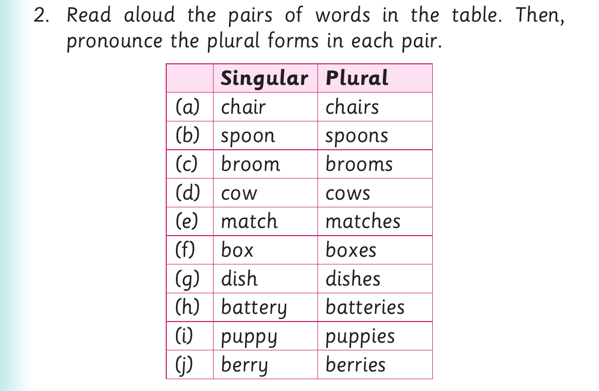

Singular and plural forms - word pairs and pictures

2. Read aloud the pairs of words in the table. Then, pronounce the plural forms in each pair. Singular Plural (a) chair chairs (b) spoon spoons (c) broom brooms (d) cow cows (e) match matches (f) box boxes (g) dish dishes (h) battery batteries (i) puppy puppies (j) berry berries

3. Say the plural of the following things and objects: Singular Plural (a) bed beds (b) jug (c) tree